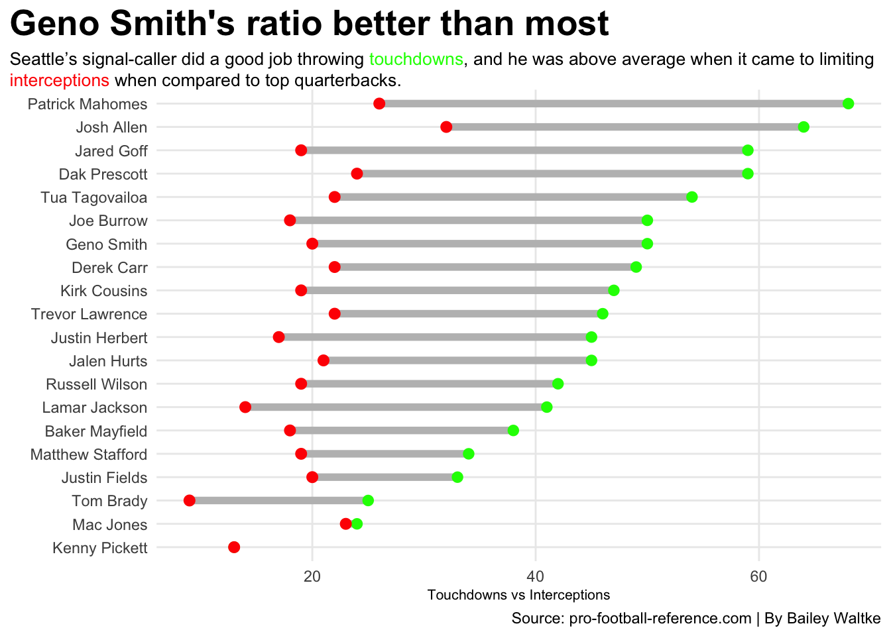
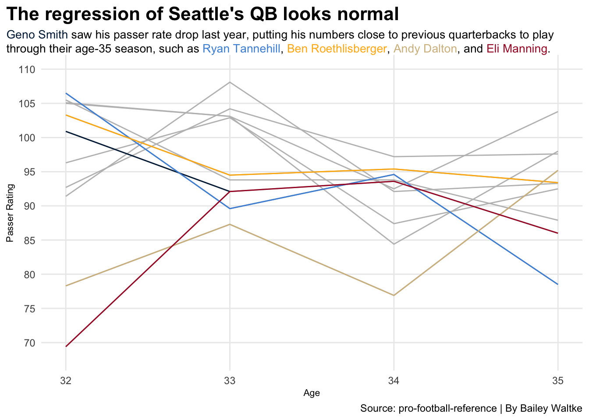

Should the Seattle Seahawks have taken a quarterback in the 2024 NFL Draft?
Author
Bailey Waltke
Published
May 5, 2024
After trading franchise quarterback Russell Wilson to the Denver Broncos following the 2021-2022 NFL season, the Seattle Seahawks were assumed to be starting a rebuild. With journeyman Geno Smith as the best quarterback on the roster entering the new season, many people saw the ’22-’23 season as a lost cause for a potential top draft pick. Across four different teams, the veteran had only started five games in the previous six years combined. The season looked like it was going to be rough.
Smith then defied expectations of everyone by leading the Seahawks to a 9-8 record and a playoff berth. In a season that saw him win NFL Comeback Player of the Year, he had a completion percentage of nearly 70% and threw 30 touchdown passes. The “rebuild” turned out to be nonexistent, as Seattle went into “win-now” mode by trying to build around their signal-caller.
The following offseason, the Seahawks rewarded their quarterback with a three-year, $105 million contract extension. This seems all well and good, unless that was a one-off “fluke” year where players catch fire and find success, only to plummet back down to their norm in the next year. With how shaky Smith’s past performance had been prior to his breakout season, there was warranted skepticism around the league as to locking up the veteran for three years and giving him that much money.
In the season that followed, Smith saw his numbers dip, but not very much. His past performance was going to be difficult to repeat, so it shouldn’t be a surprise he didn’t replicate that exact success. The Seahawks went 9-8 on the season, but they missed the playoffs via tiebreaker thanks to the Green Bay Packers.
This offseason raised big questions regarding who would be the quarterback moving forward. While Smith still has two years left on his contract, he is already 33 years old. He also saw his production dip in his second year starting for Seattle, and another dip might really handicap the Seahawks’ aspirations to compete for a division title. Perhaps it is time to think about the team’s layout after Smith’s contract expires.
During the offseason, Seattle swung a trade for former Washington Commanders quarterback Sam Howell, who is only 23 and coming off a season where he led the NFL in passing attempts and interceptions. This wasn’t the best showing for Howell, but he’s young and could definitely show improvement over time. However, trading for the young quarterback likely took the Seahawks out of contention for drafting a signal-caller in the upcoming draft. This year’s draft class was loaded with good quarterback prospects, but Seattle (not surprisingly) didn’t end up taking one.
So, with a middling plan for the future, is Geno Smith really the franchise quarterback for the Seattle Seahawks? Has he done enough in the past two years to warrant being labeled as “their guy” for the foreseeable future?
Code
library(tidyverse)library(gt)library(ggalt)library(ggtext)library(ggrepel)passing2022 <-read_csv("2022passing.csv") |>mutate(Player =gsub("*", "", Player, fixed =TRUE)) |>mutate(Player =gsub("+", "", Player, fixed =TRUE))passing2023 <-read_csv("2023passing.csv") |>mutate(Player =gsub("*", "", Player, fixed =TRUE)) |>mutate(Player =gsub("+", "", Player, fixed =TRUE))tdint2022 <- passing2022 |>select(Player, TD, Int, Att)tdint2023 <- passing2023 |>select(Player, TD, Int, Att)tdintratio <-bind_rows(tdint2022, tdint2023) |>group_by(Player) |>summarise(totaltds =sum(TD),totalints =sum(Int),totalatts =sum(Att) ) |>ungroup() |>top_n(20, wt=totalatts)ggplot() +geom_dumbbell(data=tdintratio, aes(y=reorder(Player, totaltds), x=totaltds, xend=totalints),size =2,colour ="grey",colour_x ="green",colour_xend ="red") +labs(title="Geno Smith's ratio better than most", subtitle ="Seattle's signal-caller did a good job throwing <span style = 'color:green;'>touchdowns</span>, and he was above average when it came to limiting <span style = 'color:red;'>interceptions</span> when compared to top quarterbacks.",x="Touchdowns vs Interceptions",y="",caption="Source: pro-football-reference.com | By Bailey Waltke" ) +theme_minimal() +theme(plot.title =element_text(size =20, face ="bold"),axis.title =element_text(size =8), plot.subtitle =element_textbox_simple(size=10), panel.grid.minor =element_blank(),plot.title.position ="plot" )

As shown above, there are only two quarterbacks over the past two years with as many touchdowns and fewer interceptions than Geno Smith: Joe Burrow and Jared Goff. So, while he may not be throwing as many touchdowns as someone like Patrick Mahomes or Josh Allen, he’s also being efficient with the football and not passing it to the other team as much.
Counting stats don’t tell the whole story, however, as some quarterbacks simply throw the ball more than others. Seattle’s new backup Howell had over 100 more passing attempts last season than Smith did. So, how does Geno Smith’s numbers look when averaged, such as completion percentage and yards per attempt?
Code
comppercent2022 <- passing2022 |>select(Player, QBrec, Cmp, Att, Yds...12)comppercent2023 <- passing2023 |>select(Player, QBrec, Cmp, Att, Yds...12)comppercent <-bind_rows(comppercent2022, comppercent2023) |>separate(QBrec, into=c("Wins", "Losses", "Ties"), sep="-") |>mutate(Wins =as.numeric(Wins)) |>group_by(Player) |>summarize(totalcompletions =sum(Cmp),totalattempts =sum(Att),totalyards =sum(Yds),totalwins =sum(Wins) ) |>mutate(CompPercent = (totalcompletions/totalattempts) *100,YperAtt = totalyards/totalattempts ) |>filter(totalattempts >500)qbcomppercent <- comppercent |>filter(Player =="Geno Smith"| Player =="Brock Purdy"| Player =="Kyler Murray"| Player =="Matthew Stafford")ggplot() +geom_point(data=comppercent, aes(x=CompPercent, y=YperAtt, size=totalwins), color="grey", alpha=.5) +geom_point(data=qbcomppercent, aes(x=CompPercent, y=YperAtt, size=totalwins), color="red") +geom_vline(xintercept =64.3) +geom_hline(yintercept =7.0) +geom_text_repel(data=qbcomppercent, aes(x=CompPercent, y=YperAtt, label=Player) ) +labs(title="Geno Smith among the league's best", subtitle="No. 7 stacks up well in completion percentage and yards per attempt, and he's \nbetter than two other starters in the NFC West division.", x="Completion Percentage", y="Yards per Attempt", caption="Source: pro-football-reference | By Bailey Waltke") +theme_minimal() +theme(plot.title =element_text(size =16, face ="bold"),axis.title =element_text(size =8), plot.subtitle =element_text(size=10), panel.grid.minor =element_blank(),plot.title.position ="plot" )
Smith grades out well in these metrics, faring better than two of the quarterbacks within his division. While he isn’t necessarily topping these leaderboards, he’s showing overall capability to do what is necessary to lead Seattle’s offense.
Now, what about regression? As players get older, they often see their production dip as a result. So, how have those older quarterbacks fared as they ventured toward their mid-30s? How does Smith’s numbers stack up?
Code
oldqbs23 <- passing2023 |>filter(Player =="Geno Smith"| Player =="Matthew Stafford"| Player =="Russell Wilson"| Player =="Kirk Cousins"| Player =="Ryan Tannehill") |>mutate(Season =2023) |>select(Player, Rate, Age)oldqbs22 <- passing2022 |>filter(Player =="Geno Smith"| Player =="Matthew Stafford"| Player =="Russell Wilson"| Player =="Kirk Cousins"| Player =="Ryan Tannehill"| Player =="Andy Dalton") |>mutate(Season =2022) |>select(Player, Rate, Age)passing2021 <-read_csv("2021passing.csv") |>mutate(Player =gsub("*", "", Player, fixed =TRUE)) |>mutate(Player =gsub("+", "", Player, fixed =TRUE))passing2020 <-read_csv("2020passing.csv") |>mutate(Player =gsub("*", "", Player, fixed =TRUE)) |>mutate(Player =gsub("+", "", Player, fixed =TRUE))passing2019 <-read_csv("2019passing.csv") |>mutate(Player =gsub("*", "", Player, fixed =TRUE)) |>mutate(Player =gsub("+", "", Player, fixed =TRUE))passing2018 <-read_csv("2018passing.csv") |>mutate(Player =gsub("*", "", Player, fixed =TRUE)) |>mutate(Player =gsub("+", "", Player, fixed =TRUE))passing2017 <-read_csv("2017passing.csv") |>mutate(Player =gsub("*", "", Player, fixed =TRUE)) |>mutate(Player =gsub("+", "", Player, fixed =TRUE))passing2016 <-read_csv("2016passing.csv") |>mutate(Player =gsub("*", "", Player, fixed =TRUE)) |>mutate(Player =gsub("+", "", Player, fixed =TRUE))passing2015 <-read_csv("2015passing.csv") |>mutate(Player =gsub("*", "", Player, fixed =TRUE)) |>mutate(Player =gsub("+", "", Player, fixed =TRUE))passing2014 <-read_csv("2014passing.csv") |>mutate(Player =gsub("*", "", Player, fixed =TRUE)) |>mutate(Player =gsub("+", "", Player, fixed =TRUE))passing2013 <-read_csv("2013passing.csv") |>mutate(Player =gsub("*", "", Player, fixed =TRUE)) |>mutate(Player =gsub("+", "", Player, fixed =TRUE))oldqbs21 <- passing2021 |>filter(Player =="Matthew Stafford"| Player =="Russell Wilson"| Player =="Kirk Cousins"| Player =="Ryan Tannehill"| Player =="Andy Dalton") |>mutate(Season =2021) |>select(Player, Rate, Age)oldqbs20 <- passing2020 |>filter(Player =="Matthew Stafford"| Player =="Russell Wilson"| Player =="Kirk Cousins"| Player =="Ryan Tannehill"| Player =="Andy Dalton"| Player =="Matt Ryan") |>mutate(Season =2020) |>select(Player, Rate, Age)oldqbs19 <- passing2019 |>filter(Player =="Andy Dalton"| Player =="Matt Ryan") |>mutate(Season =2019) |>select(Player, Rate, Age)oldqbs18 <- passing2018 |>filter(Player =="Aaron Rodgers"| Player =="Matt Ryan") |>mutate(Season =2018) |>select(Player, Rate, Age)oldqbs17 <- passing2017 |>filter(Player =="Aaron Rodgers"| Player =="Matt Ryan"| Player =="Ben Roethlisberger") |>mutate(Season =2017) |>select(Player, Rate, Age)oldqbs16 <- passing2016 |>filter(Player =="Aaron Rodgers"| Player =="Ben Roethlisberger"| Player =="Philip Rivers"| Player =="Eli Manning") |>mutate(Season =2016) |>select(Player, Rate, Age)oldqbs15 <- passing2015 |>filter(Player =="Aaron Rodgers"| Player =="Ben Roethlisberger"| Player =="Philip Rivers"| Player =="Eli Manning") |>mutate(Season =2015) |>select(Player, Rate, Age)oldqbs14 <- passing2014 |>filter(Player =="Ben Roethlisberger"| Player =="Philip Rivers"| Player =="Eli Manning") |>mutate(Season =2014) |>select(Player, Rate, Age)oldqbs13 <- passing2013 |>filter(Player =="Philip Rivers"| Player =="Eli Manning") |>mutate(Season =2013) |>select(Player, Rate, Age)oldqbrate <-bind_rows(oldqbs23, oldqbs22, oldqbs21, oldqbs20, oldqbs19, oldqbs18, oldqbs17, oldqbs16, oldqbs15, oldqbs14, oldqbs13) geno <- oldqbrate |>filter(Player =="Geno Smith")tannehill <- oldqbrate |>filter(Player =="Ryan Tannehill")bigben <- oldqbrate |>filter(Player =="Ben Roethlisberger")dalton <- oldqbrate |>filter(Player =="Andy Dalton")fatheroftombrady <- oldqbrate |>filter(Player =="Eli Manning")ggplot() +geom_line(data=oldqbrate, aes(x=Age, y=Rate, group=Player), color="grey") +geom_line(data=geno, aes(x=Age, y=Rate, group=Player), color="#002244") +geom_line(data=tannehill, aes(x=Age, y=Rate, group=Player), color="#4B92DB") +geom_line(data=bigben, aes(x=Age, y=Rate, group=Player), color="#FFB612") +geom_line(data=dalton, aes(x=Age, y=Rate, group=Player), color="#D3BC8D") +geom_line(data=fatheroftombrady, aes(x=Age, y=Rate, group=Player), color="#A71930") +scale_y_continuous(breaks=c(65, 70, 75, 80, 85, 90, 95, 100, 105, 110), limits =c(68, 110)) +labs(title="The regression of Seattle's QB looks normal", subtitle ="<span style = 'color:#002244;'>Geno Smith</span> saw his passer rate drop last year, putting his numbers close to previous quarterbacks to play through their age-35 season, such as <span style = 'color:#4B92DB;'>Ryan Tannehill</span>, <span style = 'color:#FFB612;'>Ben Roethlisberger</span>, <span style = 'color:#D3BC8D;'>Andy Dalton</span>, and <span style = 'color:#A71930;'>Eli Manning</span>.", y ="Passer Rating",caption="Source: pro-football-reference | By Bailey Waltke") +theme_minimal() +theme(plot.title =element_text(size =16, face ="bold"),axis.title =element_text(size =8), plot.subtitle =element_textbox_simple(size=10),panel.grid.minor =element_blank(),plot.title.position ="plot")

Code
qbrold23 <- passing2023 |>filter(Player =="Geno Smith"| Player =="Matthew Stafford"| Player =="Russell Wilson"| Player =="Kirk Cousins"| Player =="Ryan Tannehill") |>mutate(Season =2023) |>select(Player, QBR, Age)qbrold22 <- passing2022 |>filter(Player =="Geno Smith"| Player =="Matthew Stafford"| Player =="Russell Wilson"| Player =="Kirk Cousins"| Player =="Ryan Tannehill"| Player =="Andy Dalton") |>mutate(Season =2022) |>select(Player, QBR, Age)qbrold21 <- passing2021 |>filter(Player =="Matthew Stafford"| Player =="Russell Wilson"| Player =="Kirk Cousins"| Player =="Ryan Tannehill"| Player =="Andy Dalton") |>mutate(Season =2021) |>select(Player, QBR, Age)qbrold20 <- passing2020 |>filter(Player =="Matthew Stafford"| Player =="Russell Wilson"| Player =="Kirk Cousins"| Player =="Ryan Tannehill"| Player =="Andy Dalton"| Player =="Matt Ryan") |>mutate(Season =2020) |>select(Player, QBR, Age)qbrold19 <- passing2019 |>filter(Player =="Andy Dalton"| Player =="Matt Ryan") |>mutate(Season =2019) |>select(Player, QBR, Age)qbrold18 <- passing2018 |>filter(Player =="Aaron Rodgers"| Player =="Matt Ryan") |>mutate(Season =2018) |>select(Player, QBR, Age)qbrold17 <- passing2017 |>filter(Player =="Aaron Rodgers"| Player =="Matt Ryan"| Player =="Ben Roethlisberger") |>mutate(Season =2017) |>select(Player, QBR, Age)qbrold16 <- passing2016 |>filter(Player =="Aaron Rodgers"| Player =="Ben Roethlisberger"| Player =="Philip Rivers"| Player =="Eli Manning") |>mutate(Season =2016) |>select(Player, QBR, Age)qbrold15 <- passing2015 |>filter(Player =="Aaron Rodgers"| Player =="Ben Roethlisberger"| Player =="Philip Rivers"| Player =="Eli Manning") |>mutate(Season =2015) |>select(Player, QBR, Age)qbrold14 <- passing2014 |>filter(Player =="Ben Roethlisberger"| Player =="Philip Rivers"| Player =="Eli Manning") |>mutate(Season =2014) |>select(Player, QBR, Age)qbrold13 <- passing2013 |>filter(Player =="Philip Rivers"| Player =="Eli Manning") |>mutate(Season =2013) |>select(Player, QBR, Age)qbrold <-bind_rows(qbrold23, qbrold22, qbrold21, qbrold20, qbrold19, qbrold18, qbrold17, qbrold16, qbrold15, qbrold14, qbrold13)genoqbr <- qbrold |>filter(Player =="Geno Smith")daltonqbr <- qbrold |>filter(Player =="Andy Dalton")russqbr <- qbrold |>filter(Player =="Russell Wilson")aaronqbr <- qbrold |>filter(Player =="Aaron Rodgers")mattryanqbr <- qbrold |>filter(Player =="Matt Ryan")staffordqbr <- qbrold |>filter(Player =="Matthew Stafford")ggplot() +geom_line(data=qbrold, aes(x=Age, y=QBR, group=Player), color="grey") +geom_line(data=genoqbr, aes(x=Age, y=QBR, group=Player), color="#002244") +geom_line(data=daltonqbr, aes(x=Age, y=QBR, group=Player), color="#D3BC8D") +geom_line(data=russqbr, aes(x=Age, y=QBR, group=Player), color="#FB4F14") +geom_line(data=aaronqbr, aes(x=Age, y=QBR, group=Player), color="#203731") +geom_line(data=mattryanqbr, aes(x=Age, y=QBR, group=Player), color="#A71930") +geom_line(data=staffordqbr, aes(x=Age, y=QBR, group=Player), color="#003594") +scale_y_continuous(breaks=c(35, 40, 45, 50, 55, 60, 65, 70, 75), limits =c(35, 75)) +labs(title="QBR yields similar results for Geno Smith", subtitle ="Much like with passer rating, <span style = 'color:#002244;'>Geno Smith</span> has a QBR that puts him among seasoned veteran quarterbacks in recent history, like <span style = 'color:#D3BC8D;'>Andy Dalton</span>, <span style = 'color:#FB4F14;'>Russell Wilson</span>, <span style = 'color:#203731;'>Aaron Rodgers</span>, <span style = 'color:#A71930;'>Matt Ryan</span>, and <span style = 'color:#003594;'>Matthew Stafford</span>.", y ="QB Rate",caption="Source: pro-football-reference | By Bailey Waltke") +theme_minimal() +theme(plot.title =element_text(size =16, face ="bold"),axis.title =element_text(size =8), plot.subtitle =element_textbox_simple(size=10),panel.grid.minor =element_blank(),plot.title.position ="plot")
As many of the past quarterbacks to play to their age-35 season have seen their numbers stay consistent, there shouldn’t be much panic about Smith entering the ’24-’25 NFL season. However, this upcoming campaign will be an important one for his future with the organization beyond his current contract.
If his numbers stay in line with his production the past two years, then perhaps Seattle has found their guy beyond what he’s already under contract for. If his numbers dip even more from where they were last season, then perhaps a changing of the guard will be set up beyond Smith’s contract.